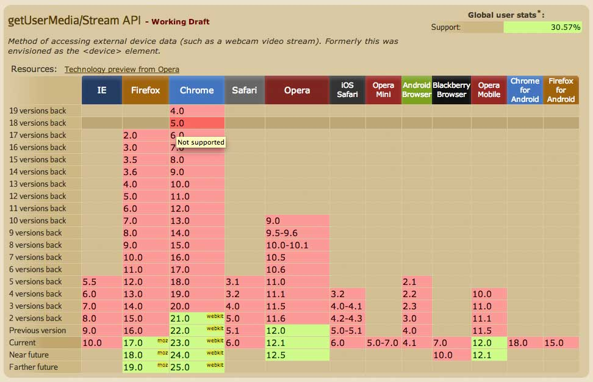

Innovation
Gesture Technology
Approaches
- Microsoft Kinect
- Webcams & GetUserMedia
- Other third-party, e.g. LeapMotion
Microsoft Kinect
- Provides 3D motion detection
- Originally for Xbox
- Windows version released Feb 2012
- OpenKinect: OpenSource community
- Very interesting but:
- Requires a Kinect (i.e. not ubiquitous)
- Requires significant programming effort
Kinect example: Controlling Goggle Earth
Kinect Earth from Matt Fargo on Vimeo.
A local example
- NZPost Noise Ink, Auckland Arts Festival 2011
Webcams
- Webcams are (almost) ubiquitous
- New APIs (e.g. GetUserMedia) mean the browser can directly interact with the webcam

This presentation!
Courtesy Webcam Swiper
Webcam Swiper
- Basic recognition of movement between left and right sides of the screen
- Simply counts the number of pixels whose colour has changed
- The Webcam Swiper example
Magic Xylophone
- Allows the user the play the xylophone appearing at the top of their screen with their fingers
- The Magic Xylophone example
Flutter
- Control your music player with gestures
- The Flutter app
GetUserMedia API
- These examples uses the GetUserMedia API
- Allows browser to interact with OS peripherals (webcam, microphone, speakers)
- Chrome and Firefox at the moment
Browser compatibility
The way it works
- User navigates to URL
- Browser detects GetUserMedia call, and asks user for permission every time
The bigger picture
- GetUserMedia is part of WebRTC
- WebRTC aims to allow use of multimedia capture for peer-to-peer communication using the browser
- A.K.A the "Skype-killer"
Face detection
- Captures webcam and detects pattern resembling a face
- The example
- Relies on some rocket science, e.g. Core Computer Vision (CCV) library
- Is becoming widely-used to detect faces in still images
Face detection: examples
Face detection: FaceKat
- A simple game using your face for navigation to avoid obstacles
- The example
The state of the art: Google
- Movi.Kanti.Revo
- The details
- Makes use of the CCV face detection library
The state of the art: Toyota
- Toyota Smart INSECT
- Uses the Kinect
- Uses facial recognition to detect the owner
Uses?
- Entertaiment / promotional
- Has been noticed by the disabled

Related APIs
Potential for Learning Media
- Could create simple interactives that use the webcam to respond to gross movements
- Could use face detection to identify and interact with faces via webcam
- Watch out for "Gorilla Arm!"